Materiales
- 1 × Arduino Mega 2560 (o compatible)
- 1 × Breadboard grande
- 15 × LEDs (5 rojos, 5 amarillos, 5 verdes)
- 15 × Resistencias 220 Ω (o 330 Ω)
- Muchos jumpers macho-macho
- Cable USB para programar
- Fuente 5 V (la del USB basta para pruebas)
- GND común a todas las líneas negativas de la breadboard.
- Ánodo del LED → resistencia → pin digital.
- Cátodo del LED → GND.
- Usamos 15 pines digitales del Mega, uno por LED.
Mapeo de pines (Arduino Mega → LED)
Cada semáforo tiene 3 LEDs: Rojo (R), Amarillo (A), Verde (V). Puedes cambiar los pines si lo prefieres.
| Semáforo | Rojo | Amarillo | Verde |
|---|---|---|---|
| S1 | 13 | 12 | 11 |
| S2 | 10 | 9 | 8 |
| S3 | 5 | 6 | 7 |
| S4 | 2 | 3 | 4 |
| S5 | 10 | 9 | 8 |
Consejo: lleva líneas de 5 V y GND por los rieles laterales de la breadboard para ordenar el cableado.
Montaje paso a paso
- Conecta el GND del Arduino a la línea negativa de la breadboard.
- Coloca los 15 LEDs: en cada semáforo agrupa R-A-V (ánodo a la derecha es práctico).
- Del ánodo de cada LED, pon una resistencia 220 Ω hacia una fila libre.
- De esa fila, saca un jumper al pin asignado (ver tabla de pines).
- Conecta cada cátodo al riel de GND.
- Revisa polaridad de LEDs (la pata larga suele ser el ánodo).
- Programa el Arduino con el sketch de abajo y prueba.
Lógica sugerida
- Secuencia tipo “onda”: S1 en verde → S2 → S3 → S4 → S5.
- Para cada Sn: Verde (t_v), Amarillo (t_a), y el resto en rojo.
- Evita encender dos verdes conflictivos si simulas intersecciones reales.
Código Arduino
Copia esto en el IDE de Arduino como semaforos_mega.ino. Asegúrate de que los pines coincidan con tu mapeo.
// Proyecto: 5 semáforos con Arduino Mega
// Cada LED debe llevar su resistencia (220 Ω o 330 Ω) en serie.
// C++ code
//
void setup()
{
pinMode(13, OUTPUT);
pinMode(12, OUTPUT);
pinMode(11, OUTPUT);
pinMode(10, OUTPUT);
pinMode(9, OUTPUT);
pinMode(8, OUTPUT);
pinMode(7, OUTPUT);
pinMode(6, OUTPUT);
pinMode(5, OUTPUT);
pinMode(4, OUTPUT);
pinMode(3, OUTPUT);
pinMode(2, OUTPUT);
}
void loop()
{
digitalWrite(4,HIGH);
digitalWrite(3, LOW);
digitalWrite(2, LOW);
digitalWrite(5,HIGH);
digitalWrite(8,LOW);
digitalWrite(6, LOW);
digitalWrite(7, LOW);
digitalWrite(10, HIGH);
digitalWrite(9,LOW);
digitalWrite(13, HIGH);
delay(5000);
digitalWrite(4, LOW);
delay(500);
digitalWrite(4,HIGH);
delay(500);
digitalWrite(4,LOW);
delay(500);
digitalWrite(4,HIGH);
delay(500);
digitalWrite(4,LOW);
delay(500);
digitalWrite(3, HIGH);
delay(1000);
digitalWrite(3, LOW);
delay(500);
digitalWrite(3, HIGH);
delay(500);
digitalWrite(3, LOW);
delay(500);
digitalWrite(3, HIGH);
delay(500);
digitalWrite(5,HIGH);
digitalWrite(8,HIGH);
digitalWrite(6, LOW);
digitalWrite(7, LOW);
digitalWrite(10, LOW);
digitalWrite(9,LOW);
digitalWrite(3, LOW);
digitalWrite(13, HIGH);
digitalWrite(2, HIGH);
delay(5000);
digitalWrite(8, LOW);
delay(500);
digitalWrite(8,HIGH);
delay(500);
digitalWrite(8,LOW);
delay(500);
digitalWrite(8,HIGH);
delay(500);
digitalWrite(10,LOW);
digitalWrite(9,HIGH);
digitalWrite(8,LOW);
digitalWrite(13, HIGH);
delay(2000);
digitalWrite(9,LOW);
delay(500);
digitalWrite(9,HIGH);
delay(500);
digitalWrite(9,LOW);
delay(500);
digitalWrite(9,HIGH);
delay(500);
digitalWrite(5, LOW);
digitalWrite(6, LOW);
digitalWrite(7,HIGH);
digitalWrite(8, LOW);
digitalWrite(10,HIGH);
digitalWrite(9, LOW);
digitalWrite(13, HIGH);
delay(5000);
delay(500);
digitalWrite(7, LOW);
delay(500);
digitalWrite(7, HIGH);
delay(500);
digitalWrite(7, LOW);
delay(500);
digitalWrite(7, HIGH);
delay(500);
digitalWrite(5, LOW);
digitalWrite(6,HIGH);
digitalWrite(7, LOW);
delay(2000);
digitalWrite(6, LOW);
delay(500);
digitalWrite(6, HIGH);
delay(500);
digitalWrite(6, LOW);
delay(500);
digitalWrite(6, HIGH);
delay(500);
digitalWrite(5, HIGH);
digitalWrite(6, LOW);
digitalWrite(7,LOW);
digitalWrite(8, LOW);
digitalWrite(10,HIGH);
digitalWrite(9, LOW);
digitalWrite(11, HIGH);
digitalWrite(13, LOW);
delay(5000);
digitalWrite(11, LOW);
delay(500);
digitalWrite(11, HIGH);
delay(500);
digitalWrite(11, LOW);
delay(500);
digitalWrite(11, HIGH);
delay(500);
digitalWrite(11, LOW);
delay(500);
digitalWrite(12, HIGH);//semaforo 1
delay(1000);
digitalWrite(12, LOW);//semaforo 1
delay(500);
digitalWrite(12, HIGH);//semaforo 1
delay(500);
digitalWrite(12, LOW);//semaforo 1
delay(500);
digitalWrite(12, HIGH);//semaforo 1
delay(500);
digitalWrite(12, LOW);//semaforo 1
delay(500);
}
Problemas comunes
- LED no enciende: revisa polaridad (cátodo a GND) y la resistencia en serie.
- Todos encendidos muy tenue: GND sin buen contacto.
- Secuencia rara: pines del sketch no coinciden con tu cableado.
- Demasiada corriente: nunca alimentes un LED sin resistencia.
- Desorden: usa colores por función (rojo=5V/pines, negro=GND, amarillo=señales).
Galería del proceso de nuestro proyecto
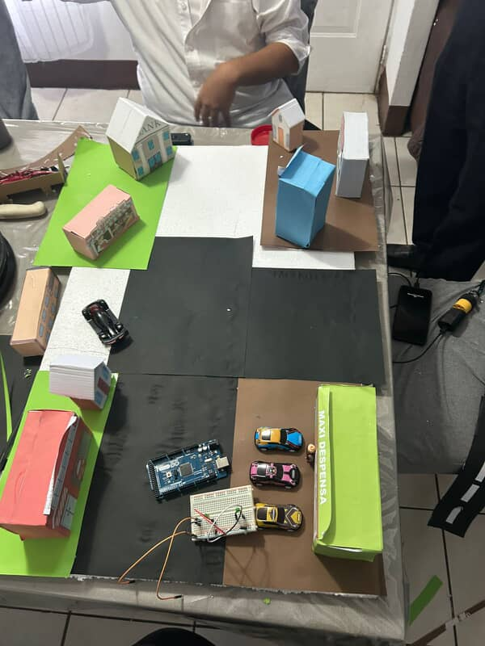
Imagen 1
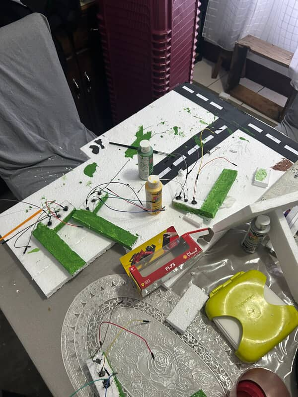
Imagen 2
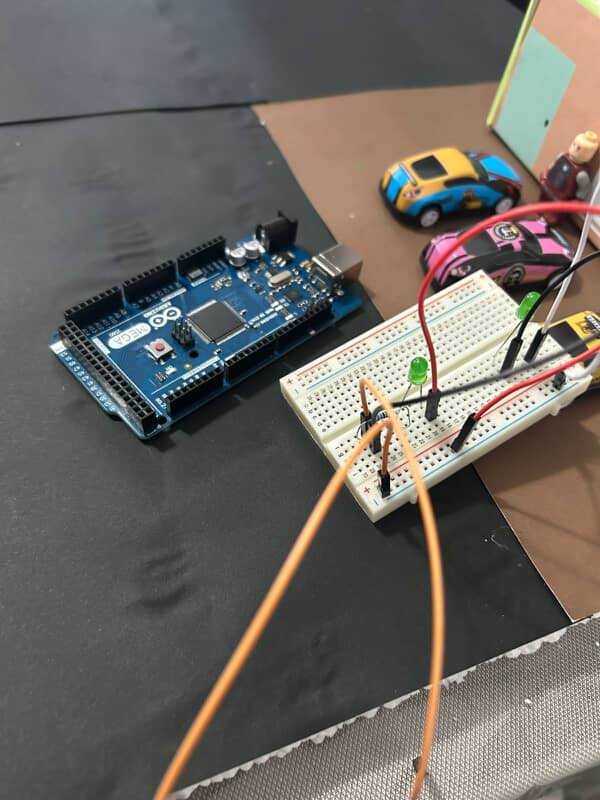
Imagen 3
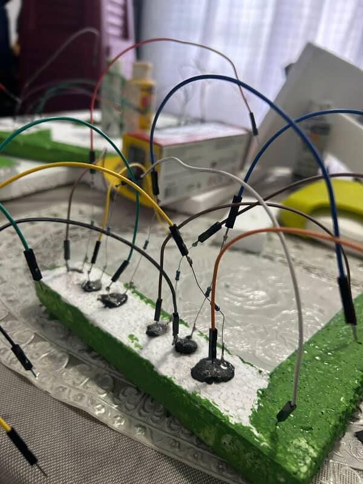
Imagen 4
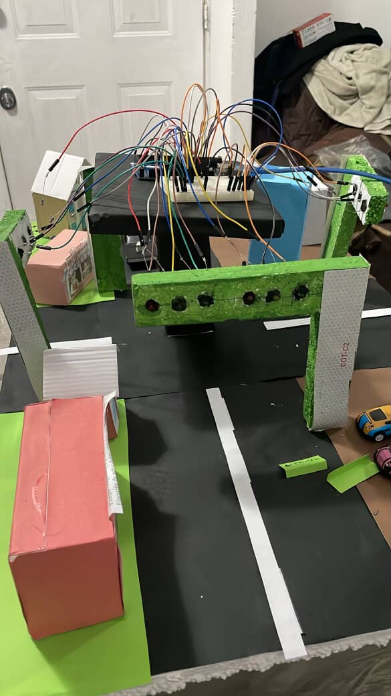
Imagen 5
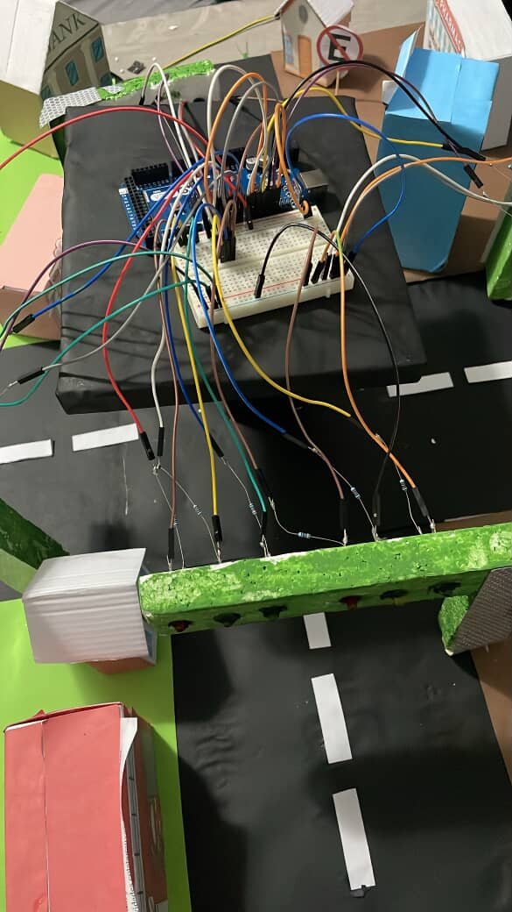
Imagen 6
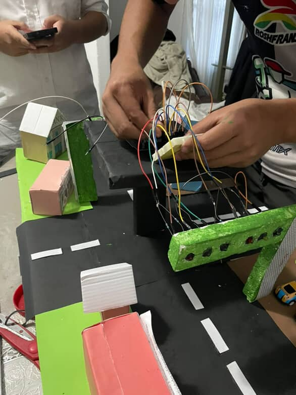
Imagen 7
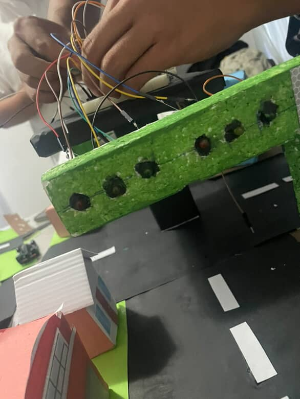
Imagen 8
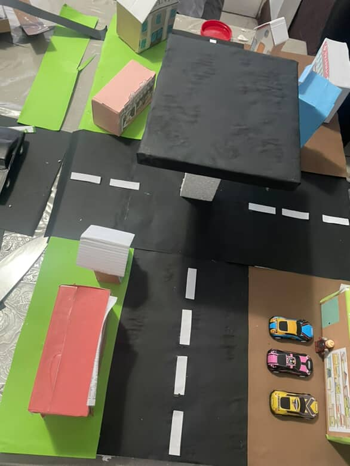
Imagen 9
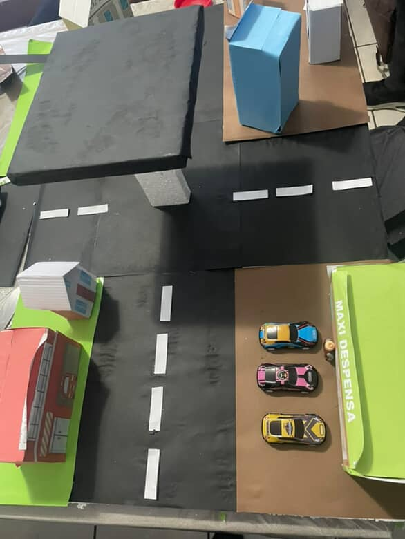
Imagen 10
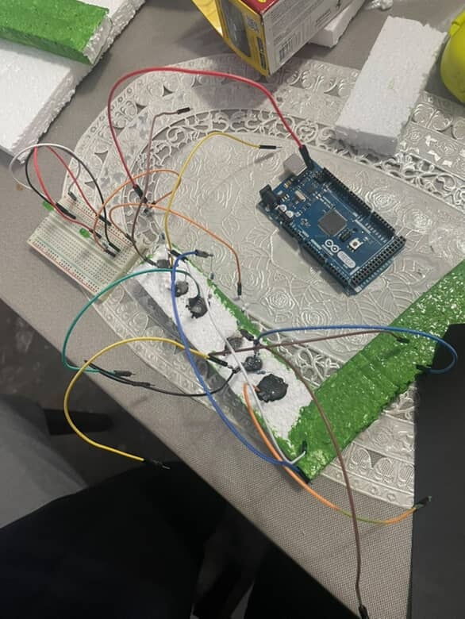
Imagen 11
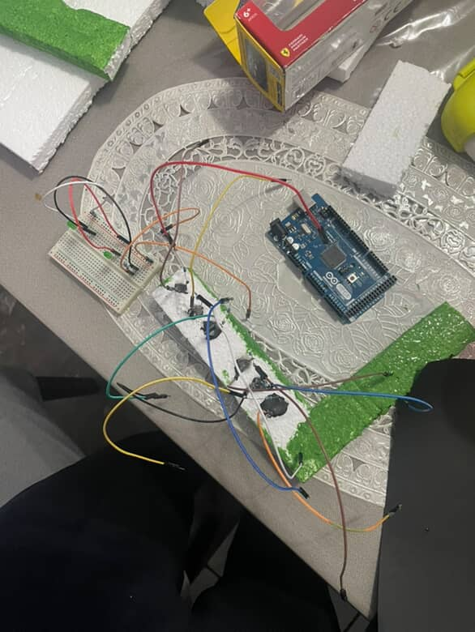
Imagen 12